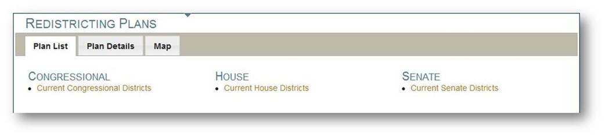
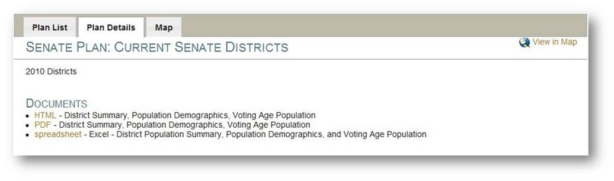
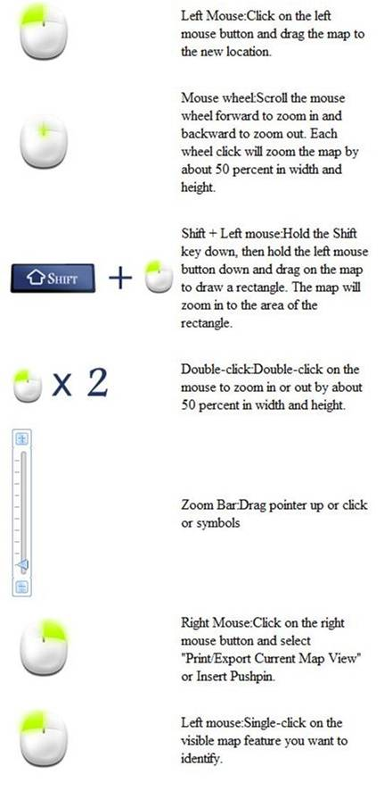
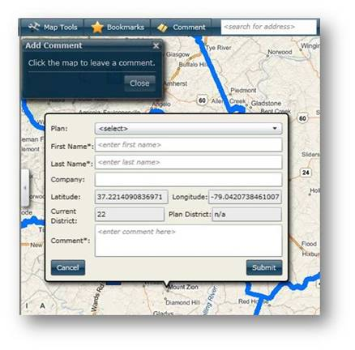
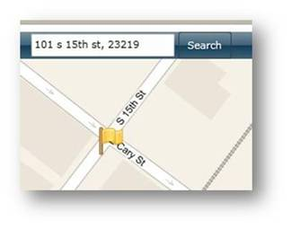
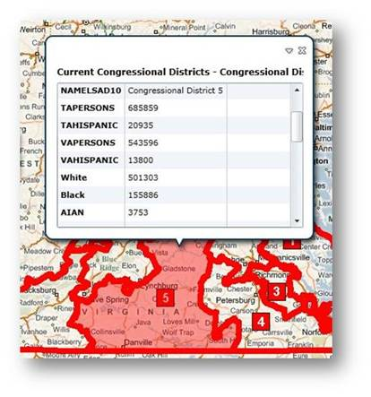
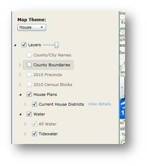
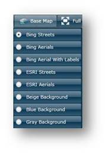
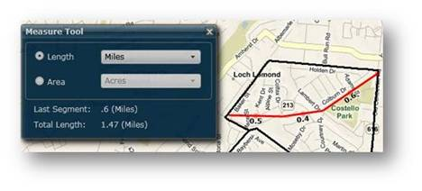
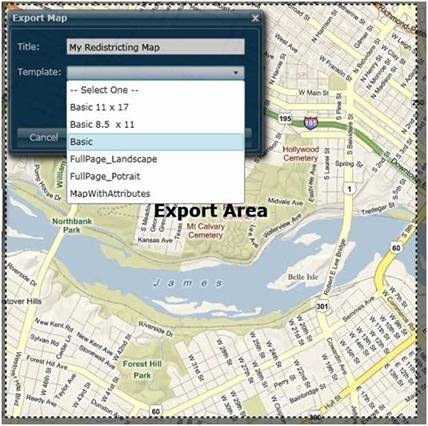

Division of Legislative Services 2010 Redistricting Site
Help
The Division of Legislative
Services (DLS) redistricting web site interface has been designed to provide
users with a simple and intuitive experience that provides current and complete
information on the 2010 redistricting process in the Commonwealth of Virginia.
DLS has modeled the mapping component of this site after popular consumer based
web mapping applications while providing users with the most current
redistricting and mapping information maintained by the Commonwealth.
System Requirements: The
web mapping application is designed to work with all modern web browsers,
including Internet Explorer, Firefox, Safari and Chrome. Microsoft’s
Silverlight plug-in application must be installed on the browser in order for
the site to operate.
|
The top of the web site provides several links for
navigating all available content and tools:
|
The Redistricting Plans page
provides a tabbed interface for navigating between a list of Congressional,
House and Senate Plans, detailed information and links for each tab, and a map
displaying the currently selected plan (and all other plans). To switch between
the tabs, simply click on the tab name on the web site.
The following are detailed
instructions on how to use each of the tabs:
Plan List: The Plan List tab provides a list of
every available plan for Congressional, House and Senate voting boundaries. As
plans are submitted to the DLS, they will become available in the Plan List.
Clicking on a plan from the list will display the plan details on the Plan
Details Tab and will automatically display the plan boundaries on the Map tab.

Plan Details: The Plan Details tab provides additional
information related to the plan selected from the Plan List or the plan
selected from the Map. This includes any available documents associated with
the plan. The related plan boundaries can be displayed on the map by clicking
on the Map tab or the View in Map link on the Plan Details tab.

Map Tab: The Map tab provides a rich
interface for exploring redistricting mapping data in more detail. If the user
is opening the Map Tab from a details page, the Map will automatically display
the plan boundaries on the map. Otherwise map will show only the County
boundaries on the map. The remaining sections of this user guide provide more
information on the tools and capabilities of the redistricting mapping
interface.
You can use a mouse to
perform nearly all navigation functions on the map. The following is a diagram
depicting each of the mouse actions and the corresponding behavior each action
provokes on the map:

Comment: The Comment tool
allows users to comment on a redistricting plan using a location on the map.
Comments must be submitted using the following workflow:
·
Click
the Comment Tool
·
Click
a location on the map
·
Choose
a Plan from the dropdown list (the currently selected plan will be the default
in this list)
·
Enter
First and Last name (required)
·
Enter
Company name (optional)
·
Enter
Comment (required)
·
Click
the Submit button to submit the comment to DLS

Search: The Search tool allows users to
search for their address on the map and automatically zoom to the address.
Valid address formats include “101 South 15th St, Richmond,
VA” or “101 South 15th St, 23219”.

Identify: The Identify
tool can be used to view attributes about map features by clicking on the map
with the left mouse button. The
attributes appear as a “bubble” window on the map, which can be
navigated with the vertical and horizontal scroll bars on the window. The
feature is highlighted on the map when it is selected in the bubble window.

Map Layers: A list of available map layers is
available on the left side of the mapping interface. Users can display
available Congressional, House and Senate plans by choosing one of the
legislative bodies from the Map Theme dropdown list. Users can turn off and on
layers to make them visible and invisible on the map. Users can also click on
the small arrow beside each layer to see how the layer should be displayed on
the map. Beside the top level of the Map Layers is a slider bar that toggles
the amount of transparency on the map layers and the background / base map
layer. If a layer is associated with a redistricting plan, a “view
details” link will be visible beside the plan. Click on this link will
open the Plan Details tab for the plan. The layer list can be resized and,
minimize the map layer list, click on the arrow button beside the list.

Base Map: In addition to displaying data from
the list of map layers, the web application simultaneously shows one of many
“Base Map” background layers. These can be toggled by clicking on
the Base Map button and then choosing one of the background layers from the
list.

Full Screen: By clicking on the Full Screen
button, the application enters a mode where the map takes up the entire screen
on the computer, maximizing the amount of mapping real estate available for the
user. To leave Full Screen mode, the user can click the Exit Full Screen button
on the map or by pressing the Escape key on the keyboard.
Bookmarks: The bookmarks tools stores commonly visited locations within
Virginia and allows users to store bookmarks and retrieve them in the mapping
application. To zoom to a static bookmark, click on the bookmark star in the
list. To create a new bookmark, zoom to the bookmark extent on the map, choose
the “Add New” icon and give the bookmark a name. You can delete the
bookmark by clicking on the delete button on the list of bookmarks. Once a
bookmark is created, it is available in future DLS mapping application
sessions.
Measure: The measure
tool can be used to measure user defined distances and areas in the map panel
by clicking on the measure tool. To measure linear distances, choose the Length
option and click on the map to start sketching a line. To measure an area,
choose the Area option and click on the map to start sketching a polygon. Each click on the map will create a
vertex and will place a text measurement with the length of the line or
polygon. On the sketch tool itself, a running list of the last segment length
and total length or area of the shape are shown. To change the unit, click on
the dropdown beside the Length or Area option to change the units.

Print / Save:
The Print / Save tool
generates a printable export of the current map. Click on the Print / Save
button on the toolbar, enter a title for the map and choose a format from the
list available Templates in the dropdown. The map will display an export area
on the map that will indicate how the current extent will be displayed in the
PDF export. Users can also pan, zoom and navigate on the map before printing,
so that adjustments can be made before a final export is created. Clicking the
Export button will Export the map and will generate a PDF.

Magnifier:
The Magnifier tool allows
users to see a magnified part of the map using aerial photographs without
having to zoom in on the map.
Coordinates:
The Coordinates button
toggles the display of map coordinates and scale bar at the bottom of the map.
Users can click on the arrow beside the map units to toggle between Decimal
Degrees, Degrees / Minutes / Seconds and Stateplane
Feet.